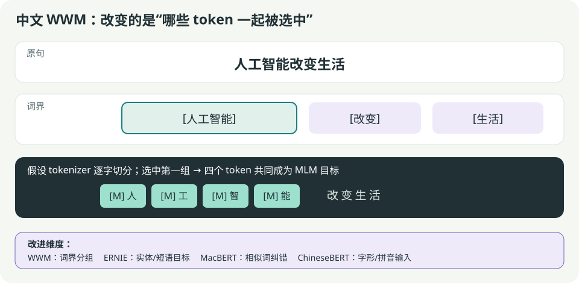

1. 中文没有天然空格，“词”首先是一个建模决定
英语句子里经常用空格分隔书写词，但中文通常是连续汉字。例如“人工智能改变生活”既可以在最细粒度切成一个个字，也可以由词法分析器把“人工智能”视为一个词、把“改变”“生活”视为另两个词。预训练 Encoder 最终接受的不是抽象“词”，而是 tokenizer 输出的 token ID 序列。中文分词词界与模型 subword token 边界是两套可能不同的边界。
早期 Google BERT-base, Chinese 的中文处理常以单个汉字作为 WordPiece token，允许另一些英文或数字片段以不同方式处理。若在 MLM 中只独立遮盖一个汉字，如只遮“智”而保留“人工__能”，目标可能因为其余字提供极强线索而过于容易。Whole Word Masking（WWM，整词掩码）就是让语义词组内相关 token 一起成为预测目标，而不是给模型在输入端增加一个“词级 embedding”。

2. 从自然句子到可计算的遮盖索引
以“人工智能改变生活”为例，先有原始字符串；分词器可能输出 [人工智能][改变][生活]；与 checkpoint 配套的 tokenizer 再把文本编码成 token IDs，假设得到 [人,工,智,能,改,变,生,活]（这是该示例假设，具体模型必须实际检查 vocab）。最后通过字符偏移量或 tokenizer offset mapping 将“人工智能”的四个字对应到 token index {0,1,2,3}。
一旦选择了“人工智能”这个词组作为训练目标，WWM 会将同一词组对应的四个 token index 一起加入 MLM 目标位置集合。模型输入仍可能是四个独立 token ID，不会神奇地融合成一个新的“人工智能” token。真正改变的是预训练时候的 mask 采样和可能的替换分布。
如果分词器把“研究生命”解释成 [研究][生命]，另一个领域中却分成 [研究生][命]，WWM 目标分组会随之变化。这种不稳定性可以影响词级训练信号；中文 WWM 因而需要记录所用分词工具、词典、版本、处理简繁体的规则及 token offset 对齐方法。
3. 整词选中不等于每个字都必须显示成 [MASK]
在原始 BERT 类型的 MLM 中，常先选大约 15% 的 token 作为预测标签位置，并对选中的位置采用约 80% 替换为 [MASK]、10% 替换为随机 token、10% 保持原词的训练策略。WWM 最重要的改动在于选中位置按整词分组；这些被选中 token 的真实 ID 都是预测标签，但它们在输入端是否替换成 mask、随机词或保留原词，要看具体预训练数据生成实现。
因此，“WWM=整段文字全替换为一个 [MASK] token”是错误理解；“只在出现 [MASK] 的位置计算 loss”也不总对。对于一个被选为预测目标、但输入端恰好保持原词的 token，MLM 仍对原词 ID 计算交叉熵。HFL 的中文 WWM 说明明确强调 mask 是广义的训练替换操作，不只指字面 [MASK] 符号。
当一个整词长度是 4，而剩余的采样预算只允许 2 个 token 时，完整保留/跳过该分组、调整预算或重新采样都是实现上的选择。实际全词采样常只能在批次或语料层面近似达到目标比例，不应强行把一个词截断成“两字被选、两字没被选”却仍声称实现的是严格 WWM。
4. 数学上 MLM 损失有没有变
令序列原 token IDs 为 x₁…xₜ，整词分组随机选出的目标 index 集合为 M，受扰输入为 x̃。最常见的 WWM 仍使用 masked language modeling 的 token 级交叉熵：每个被选位置单独对词表预测原始 ID，而不是必须额外建一个“所有可能中文词”的巨大词表分类器。
损失实现可能对有效目标数取平均。注意 M 是词分组后展开出的 token index 集合，因此“整词”体现在训练数据采样，不是把交叉熵变成一个联合的完整词概率。所有字在同一层双向 Encoder 中可相互建模，但预测目标并不会因为同属一个词就自动使用自回归链式分解。
5. ERNIE、MacBERT 和 RoBERTa-wwm 不是一种掩码
ERNIE（2019） 强调实体级与短语级的知识掩码：连续多个 token 的高层语义单元一起被遮盖，以鼓励模型利用概念级上下文。它并不是简单把所有普通中文词切成整词 mask，也不能笼统写成“每个 ERNIE 都必须从知识图谱注入实体向量”。具体论文版本与实现必须对应。
MacBERT 将 masked language model 改写为 MLM as Correction：在许多被选位置用与原词相近的词作输入替换，让训练看起来更像“纠错”，从而缓解预训练中 [MASK] 出现、而下游输入中很少出现的分布差距。HFL 论文的具体训练策略还结合 WWM 与 N-gram masking、SOP 等；不能将 MacBERT 简化为“就是全词 Mask 的 BERT”，也不能说它根本不计算原词的监督损失。
中文 RoBERTa-wwm-ext 是特定开源 checkpoint 名称，其语料规模、词表和训练目标必须按 HFL 官方资源表确认。不能因为名字里带 RoBERTa 就推断每个中文同名 checkpoint 都逐项遵循 Facebook 英文 RoBERTa 的 tokenizer 与训练配方；实用时始终加载 checkpoint 配套的 config、tokenizer、词表与特定任务头。
6. 字形和拼音不是 Mask 策略，而是额外输入模态
中文汉字带有字形结构和读音信息。ChineseBERT 这条路线在字符 token 表示之外，构造字形 embedding（例如字形在不同字体上的视觉线索）与拼音 embedding（读音及多音字相关表示），再将这些特征融合进 Transformer 的输入。它解决的是输入表示额外包含什么，而不是仅改变 mask 目标抽样。
一个汉字可能是多音字（如“行”），拼音选择可能依赖上下文与外部转换工具；不同数据来源里简繁、异体字、字形字体可用性也不相同。真实实现需要核对这些预处理步骤，不应把“额外提供拼音”理解为让模型天然完全解决所有词义歧义。额外特征还会带来 tokenizer/映射依赖与推理端处理成本。
若将多源 embedding 先拼接后投影为隐藏维度 H，假设字 token 表示 eᶜᵢ、字形 eᵍᵢ、拼音 eᵖᵢ，可用如下教学融合示意表达多源信息到 Transformer 隐空间的映射；具体实现可能在拼接、投影或位置处理上有所不同。
7. 评估时怎样避免“中文模型排行榜”陷阱
中文预训练模型之间有数个容易混淆的变量：字符级与 subword tokenizer、预训练语料大小、简繁体覆盖、NSP/SOP 与 MLM 目标、是否采用更长序列、是否额外使用相似词/实体标注、模型规模，以及不同下游任务的训练与验证划分。HFL 的论文比较多个中文模型，并对阅读理解、文本分类等多任务做评估；但跨论文成绩必须保留任务名称、数据切分、EM/F1 与准确率的区别。
对于中文问答，EM 表示答案文本精确匹配、F1 常反映字符/token 级重叠，二者不可互换；对于句对分类，应记录使用哪一套验证/测试集，以及训练是否利用对抗增强、伪标注或不同随机种子。没有这些条件，所谓某模型“提升 2 分”无法判断科学含义。
实际选型应先从数据开始：实体识别若大量有领域专名，验证词边界与术语覆盖可能比改模型名更重要；对中文拼写纠错，MacBERT 风格相似词扰动可能是有价值的预训练先验，但仍需领域内评估，而非拿演示句子的修复成功率代替测试集结果。
8. 四个非常实际的失败模式
- 使用错误 tokenizer：把一个 WWM checkpoint 搭配另一个不同 ID mapping 的词表，可能让代码能运行、输出却没有意义。
- 只按字符长度推测分组：模型 token ID 与 Unicode 字符并非一一对应，英文、数字、符号和特殊 token 尤其需要 offset 对齐。
- 把训练目标混成一种：WWM、实体 Mask、MacBERT 纠错与字形拼音输入属于不同设计层；可以组合，但来源需分别说明。
- 中文分词结果泄漏：若训练/验证文本来自重复网页或被相同文本拆到不同切分，漂亮分数可能是数据泄漏而非更好的预训练信号。
复现实验时保存原始语料版本、清洗规则、分词工具、tokenizer、mask 分组器随机种子、checkpoint SHA 与任务切分。先用十条可人工检查的中文句子审计训练目标位置，再进行大规模预训练。
9. 交互：只遮一个字与完整遮住一个词
训练样本分组审计
原句“人工智能改变生活”；假定分词词界为 [人工智能][改变][生活] 且每个汉字恰为一个 token。本演示用字面的 [MASK] 说明位置选择，不代表真实 80/10/10 随机替换。
字级独立采样：选中“智”（token index 2）。
输入：人工[MASK]能改变生活
MLM 目标位置：{2}，标签：“智”
其他三个字保留，预测可能偏容易。
10. 交互：整词粒度下的 15% 预算
8 个 token 的整词预算账（教学示意）
句子 8 个 token；字级目标比例取常见的约 15%。数值仅为说明粒度影响，不引用任何具体训练日志。
预算：8 × 15% ≈ 1.2 个目标。 字级选中 1 个 token → 实际比例 1/8 = 12.5%，接近预算。 整词起点使实际比例只能取词长的整数倍。
关键结论
- 中文“词”通常需要额外分词边界，WWM 依这些边界成组选中 token，而不是自动把词变成单个 token ID。
- WWM 的 MLM 仍多为每个被选 token 的词表交叉熵；选中位置不等于全部字面替换为
[MASK]。 - ERNIE 的实体/短语 Mask、MacBERT 的相似词纠错、ChineseBERT 的字形拼音是不同维度的设计。
- 跨 checkpoint 比较必须固定 tokenizer、语料、下游数据切分和指标。
原始论文与官方实现
- Cui et al., Pre-Training with Whole Word Masking for Chinese BERT，§II–IV，实验章节。
- Cui et al., Revisiting Pre-Trained Models for Chinese Natural Language Processing，§3–4，MacBERT Correction/SOP。
- HFL Chinese-BERT-wwm 官方仓库，“简介”、WWM 原理、checkpoint 说明与测试表。
- Sun et al., ERNIE，§2，Entity/Phrase-level Masking。
- Sun et al., ChineseBERT: Chinese Pretraining Enhanced by Glyph and Pinyin Information，§2–3，字符、字形与拼音融合。